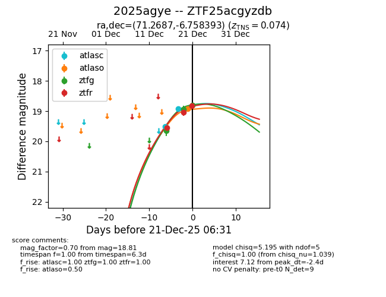
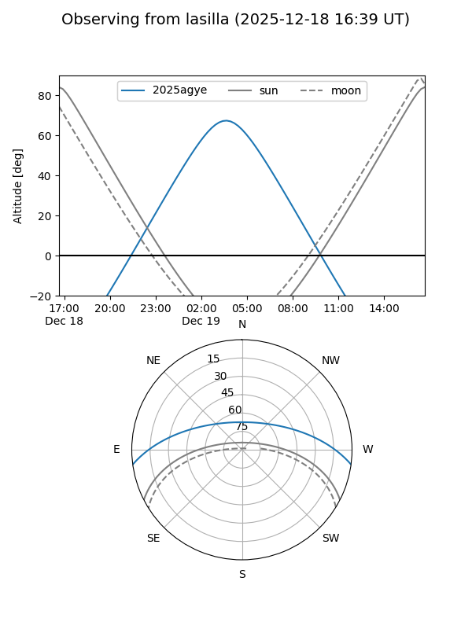
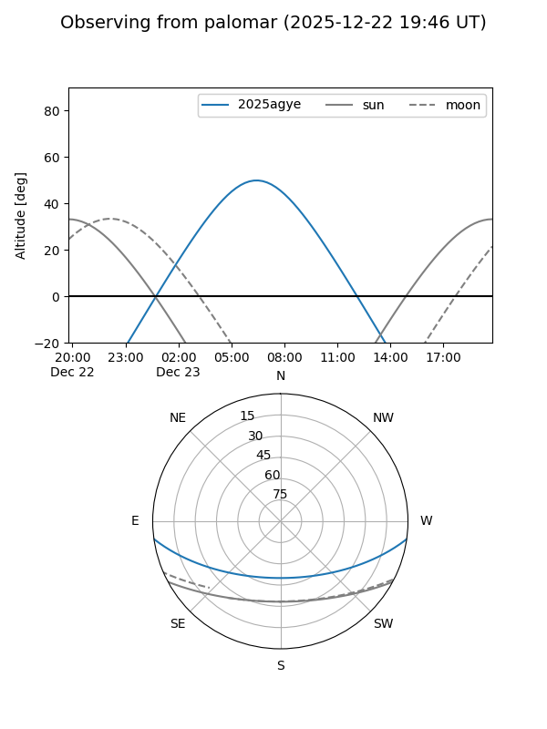
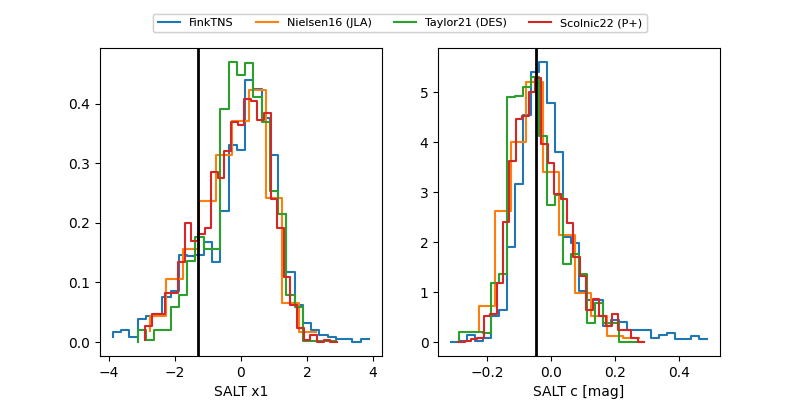

2025agye
Target 2025agye at 2026-01-09 08:01
Aliases and brokers:
FINK:
Lasair:
ALeRCE:
TNS:
YSE:
alt names
ZTF25acgyzdb (ztf,fink_ztf)
2025agye (tns,yse)
ATLAS25qbn (atlas)
PS25ksm (panstarrs)
Coordinates:
equatorial (ra, dec) = 71.2687,-6.75839
equatorial (HMS+DMS) = 04:45:04.50,-06:45:30.21
galactic (l, b) = (204.0315,-31.10718)
Flags:
confirmed ia
Photometry:
last atlasc=18.64, atlaso=18.56, ztfg=18.81, ztfr=18.95
4 atlasc, 2 atlaso, 3 ztfg, 5 ztfr detections
Lightcurve

Visibility


Additional plots
